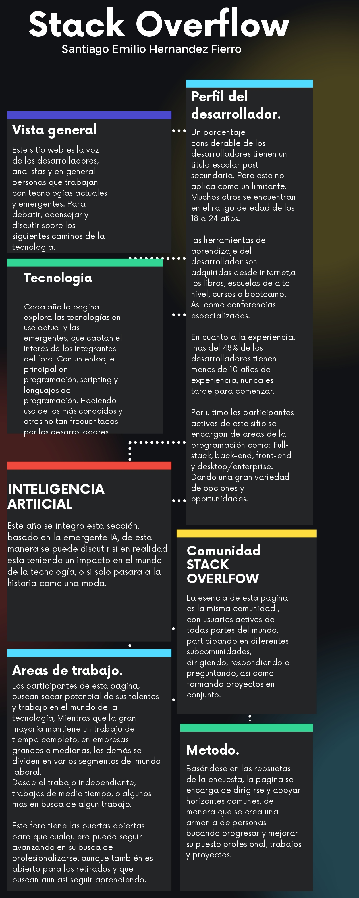
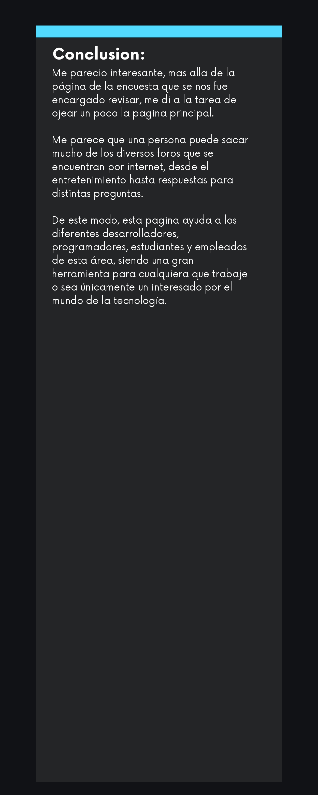
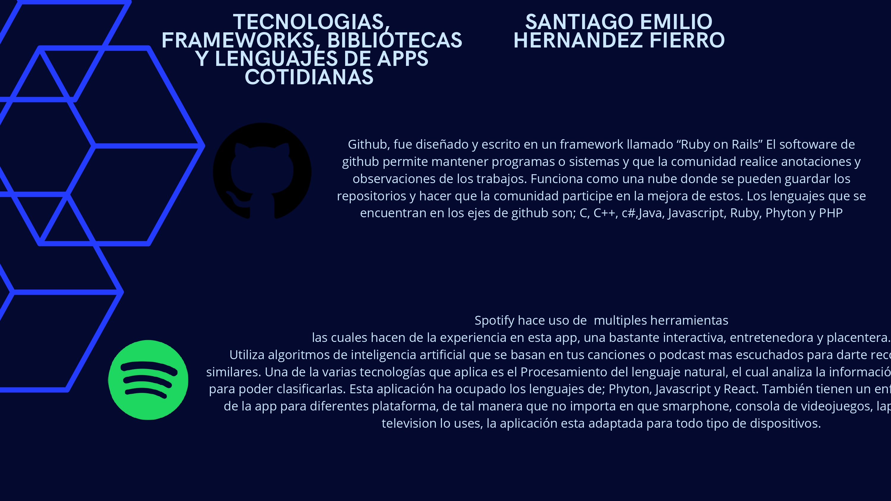
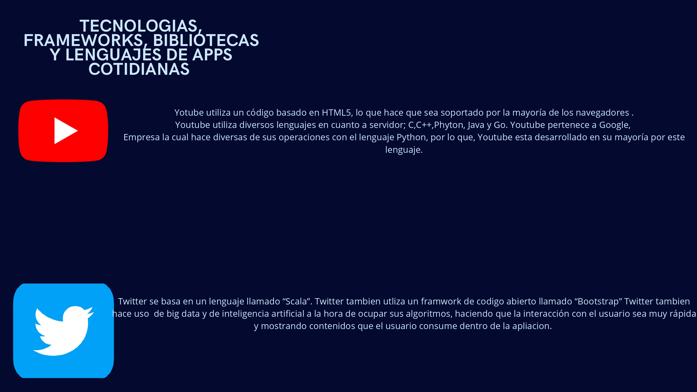
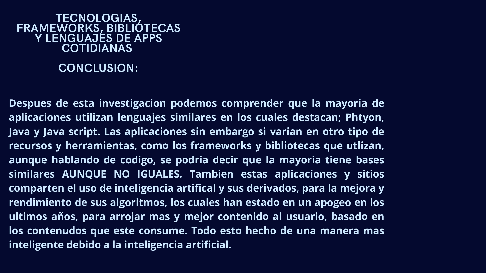

Hola, mi nombre es Santiago Emilio Hernández Fierro, y este es mi portafolio web.
Presentación:
Bienvenidos usuarios de mi página web. Una corta presentación, mi nombre es Santiago, soy entusiasta de la tecnología y de los deportes, esta página tiene el fin de servir como un portafolio, donde recopilaré algunos de mis trabajos que incorporen y mezclen mis aficiones, ¡dale un vistazo!
Mi proyecto Ultimate Fit Tracker se trata de una agenda personalizada a gusto del usuario, la cual tendrá un uso bastante útil para la vida deportista. La idea es que la aplicación misma oriente y dé consejos al usuario si este lo desea. De manera que cada experiencia de los usuarios es única y personalizada debido a sus características físicas y método de entrenamiento.
También, el "Reconocimiento de técnica" es una función de Ultimate Fit, herramienta la cual permitirá visualizar, identificar y delimitar la técnica realizada en un ejercicio, mostrando un porcentaje que indicará qué tan correcto está siendo realizado.
Reconocimiento de técnica:
El reconocmiento de tecnica es un proyecto en fase inicial, el cual se incorpora a la aplicación Ultimate Fit Tracker, en esta fase inicial se buscar reconocer ejercicos que realiza el usuario.
Esta version protitpo detecta los movimientos, curl de bicep, press de hombro, remo para espalda, y de igual manera detecta cuando el usuario no se encuentra realizando ningun ejercicio.
Justo abajo dejo un boton de start, con el cual puedes probar libremente este programa de reconomiento!
Teachable Machine Pose Model
Encuesta Stack Overflow:
Uno de los primeros trabajos realizados a lo largo de este semestre, fue la infografia de stack overflow. Me permitio conocer y analizar, asi como sentar las bases para lo que se veria despues
Me parecio una gran plataforma, donde se reunen los estudiantes, profesores y expertos para hacer aportes al mundo de la tecnolgia y de el software. Como primer trabajo sento bien las bases para temas posteriores, dejo aca abajo la infografia que presente en base a la investigación realizada.


Tecnologías en las apliaciones:
De la misma manera que con la encuesta, realice una investigación sobre las diferentes bibliotecas, frameworks y tecnologia en general que usan las apliaciones mas conocidas y usadas del mundo actual.
De igual manera dejo mi trabajo en la parte de abajo.



Contacto:
Dejo mi contacto para cualquier aclaración, duda o sugerencias, un saludo!